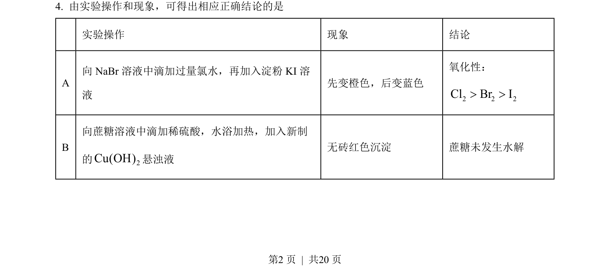
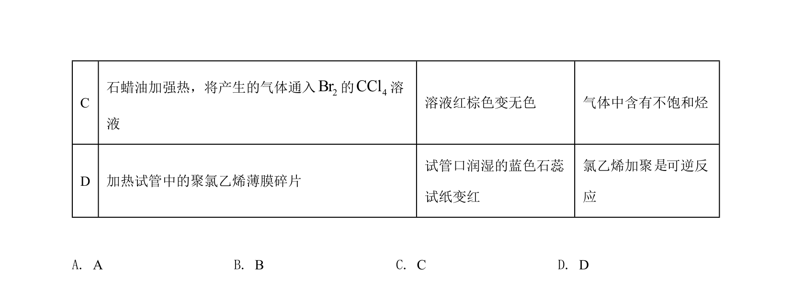
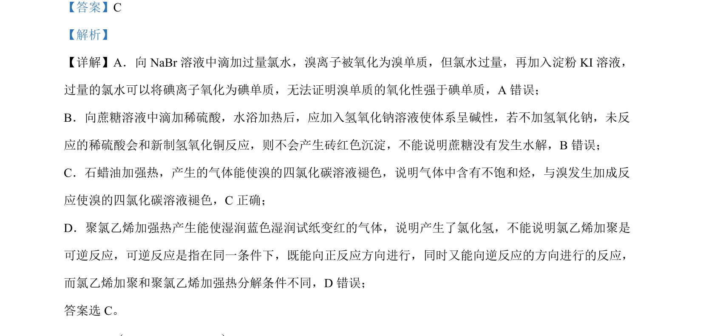

考点：氧化还原反应 淀粉碘化钾检验 醛基检验 加成反应 可逆反应条件
氧化还原反应
淀粉碘化钾检验
醛基检验
加成反应
可逆反应条件


本题考查化学实验方案设计与评价，涉及卤素氧化性比较、蔗糖水解产物检验、不饱和烃检验及可逆反应判断。

📄 原 PDF 第 2 页：素材/真题/吉林/2008-2024·（吉林）化学高考真题/2022年高考化学试卷（全国乙卷）（解析卷）.pdf
素材/真题/吉林/2008-2024·（吉林）化学高考真题/2022年高考化学试卷（全国乙卷）（解析卷）.pdf